Nier Automata is a game I've heard of but don't really know much about, though seeings these events unfold on the internet has been interesting.
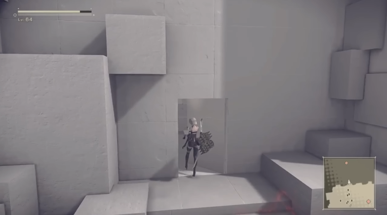
The prospect that a game you've played for a while could just have a hidden part to it all along... well that did seem possible for a game like this...!
The creators a little bit of a nutter I've heard.
This all started when a user called 'sadfutago' asked a question on about a church door...
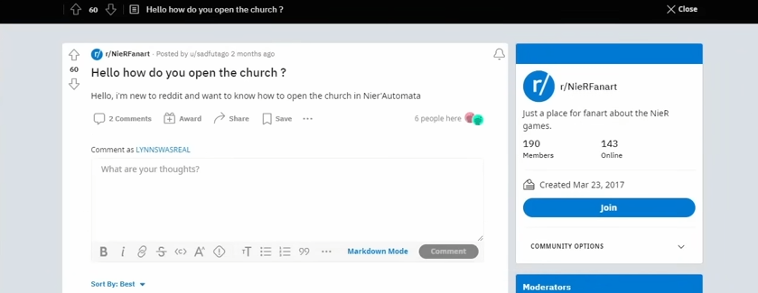
Hello how do you open the church ? u/sadfutago
Hello, i'm new to reddit and want to know how to open the church in Nier'Automata
He also asks elsewhere.
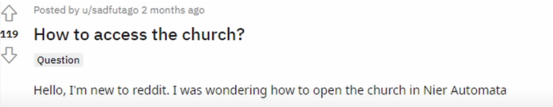
How to access the church? u/sadfutago
Hello, I'm new to reddit. I was wondering how to open the church in Nier Automata.
It seems that his grammar has improved since he joined Reddit!
Some replies ask for further clarification, where sadfutago staes that his friend can't access the church unlike him.
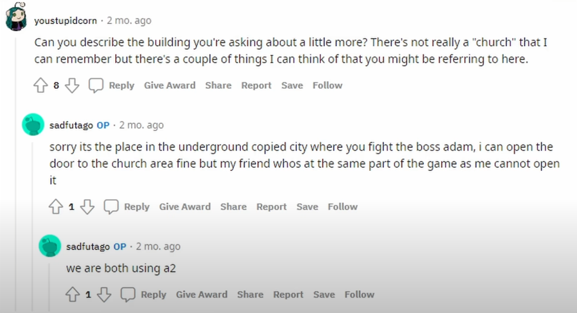
youstupidcorn
Can you describe the building you're asking about a little more? There's not really a "church" that I can remember but there's a couple of things I can think of that you are referring to here.sadfutago
sorry its the place in the underground copied city where you fight the boss adam, i can open the door to the church fine but my friend whos at the same part of the game as me cannot open itsadfutago
we are both using a2
Users press him for more information, and photos of this scene.
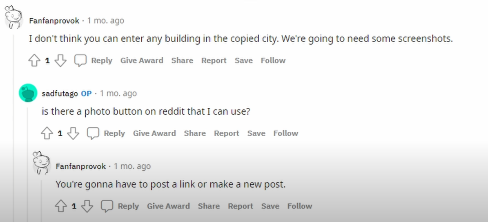
Fanfanprovok
I don't think you can enter any building in the copied city. We're going to need some screenshots.sadfutago
is there a photo button on reddit that I can use?Fanfanprovok
You're gonna have to post a link or make a new post.
From some of the spellings, strange speech and general confusion, we can infer that this user is maybe a child or a not a native english speaker. Or maybe just not particularly tech-savvy.
How would a child even be playing this game though??? Would they be interested in it......?
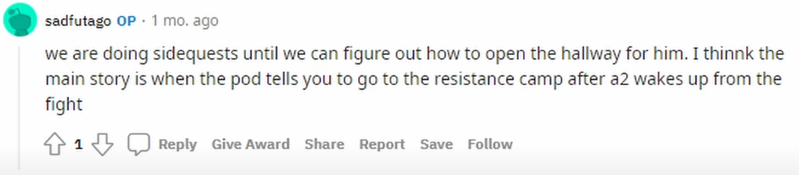
sadfutago
we are doing sidequests until we can figure out how to open the hallway for him. I thinkk the main story is when the pod tells you to go to the resistance camp after a2 wakes up from the fight
The redditors here seem particularly lacking of empthathy... or the providing of instructions on how to upload these pictures... (that's just Reddit in general).
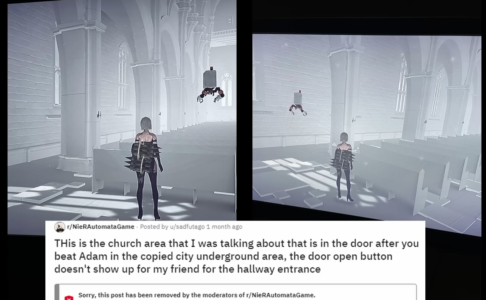
THis is the church area that I was talking about that is in the door after you beat Adam in the copied city underground area, the door open button doesn't show up for my friend for the hallway entrance u/sadfutago
Why was this banned?
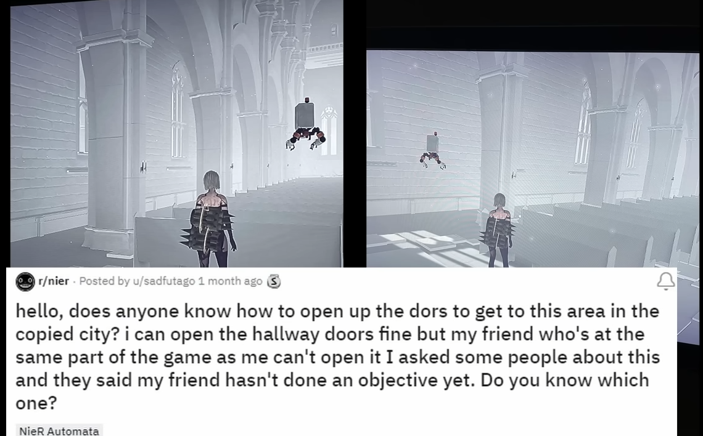
hello, does anyone know how to open up the dors to get to this area in the copied city? i can open the hallway doors fine but my friend who's at the same part of the game as me can't open it I asked some people about this and they said my friend hasn't done an objective yet. Do you know which one? u/sadfutago
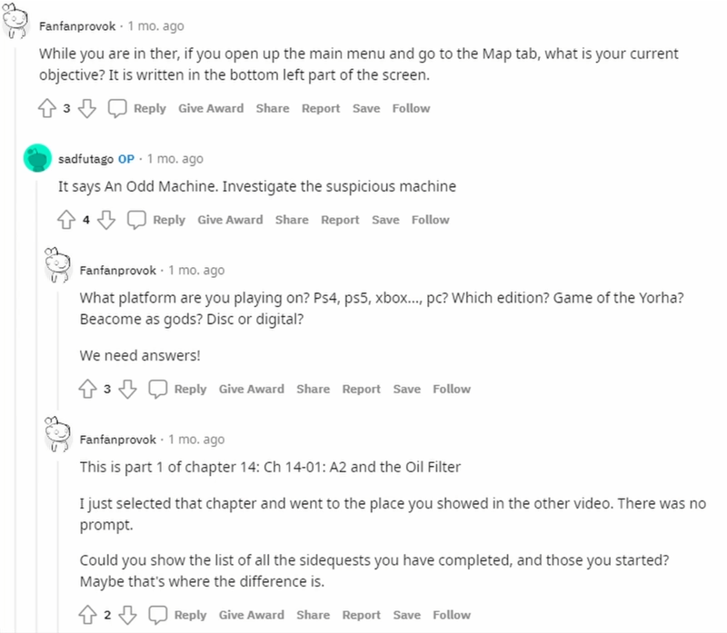
Fanfanprovok
While you are in ther, if you open up the main menu and go to the Map tab, what is your current objective? It is written in the bottom left part of the screen.sadfutago
It says An Odd Machine. Investigate the suspicious machineFanfanprovok
What platform are you playing on? Ps4, ps5, xbox..., pc? Which edition? Game of the Yorha? Beacome as gods? Disc or digital?
We need answers!Fanfanprovok
This is part 1 of chapter 14: Ch 14-01: A2 and the Oil Filter
I just selected that chapter and went to the place you showed in the video. There was no prompt.
Could you show the list of all sidequests you have completed, and those you started? Maybe that's where the difference is.
The way people type to each other on here is not natural at all, this guy just makes himself sound really untitled and unlikable... that might be a bit harsh but it really shows a lack of empthathy... or just real human conversation in general.
Maybe I'm not adjusted to 'reddit etiquette'... thank god.
Doubt brews.
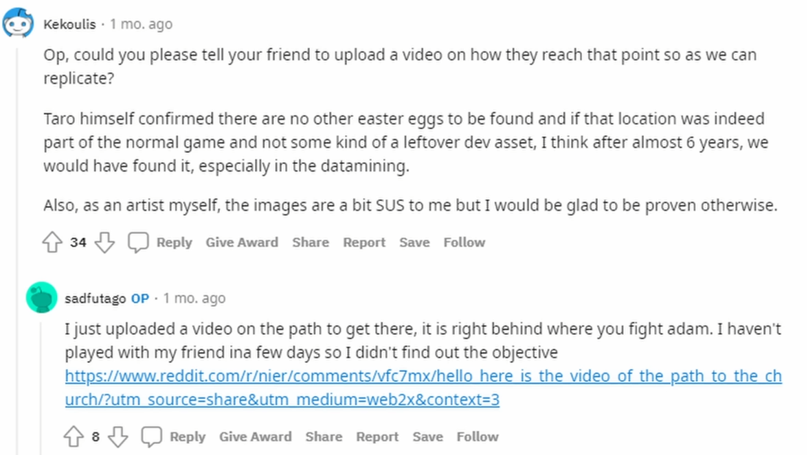
Fanfanprovok
Op, could you please tell your friend to upload a video on how they reach that point so as we can replicate?
Taro himself confirmed there are no other easter eggs to be found and if that location was indeed part of the normal game and not some kind of a leftover dev asset, I think after almost 6 years, we would have found it, especially in the datamining.
Also, as an artist myself, the images are a bit SUS to me but I would be glad to be proven otherwise.sadfutago
I just uploaded a video on the path to get there, it is right behind where you fight adam. I haven't played with my friend ina few days so I didn't find out the objective
https://www.reddit.com/r/nier/comments/vfc7mx/hello_here_is_the_video_of_the_path_to_the_church/
sadfutago uploads a phone recording of accessing the church!
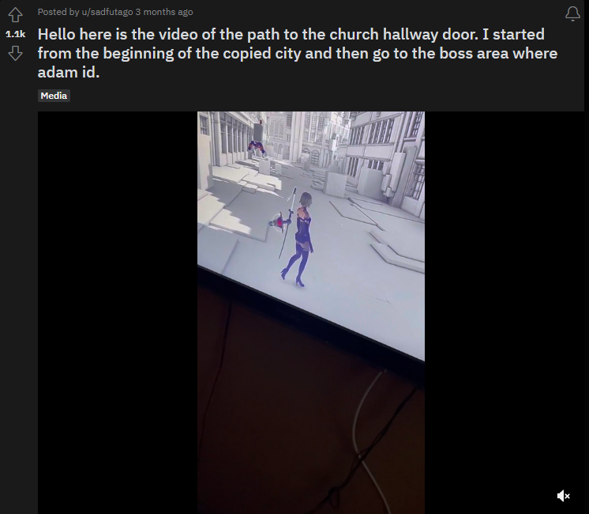
Hello here is the video of the path to the church hallway door. I started from the beginning of the copied city and then go to the boss area where adam id. u/sadfutago
Love how he gets attacked in the last frame...
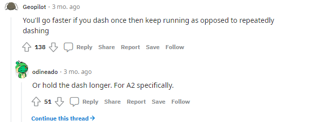
Geopilot
You'll go faster if you dash once then keep running as opposed to repeatedly dashingodineado
Or hold the dash longer. For A2 specifically.
SHUT UPPPPPPPPPPPPPPPPPPPPPPPPPPPPPP!
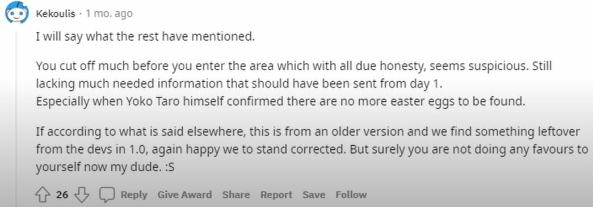
Kekoulis
I will say what the rest have mentioned.
You cut off much before you enter the area which with all due honesty, seems suspicious. Still lacking much needed information that should have been sent from day 1. Especially when Yoko Taro himself confirmed there are no more easter eggs to be found.
If according to what is said elsewhere, this is from an older version and we find something leftover from the devs in 1.0, again happy we to stand corrected. But surely you are not doing any favours to yourself now my dude. :S
REDDITORS ARE SO ANNOYING!
Oh yeah by that way this so called 'Yoko Taro' is the director of the Nier: Automata.
I like this line on his Wikipedia page:
During his youth, he heard about an incident that would influence his later work as a scenario writer: while an acquaintance was in a shopping street with a group of friends, one of them who was walking along a high building roof slipped and died from the fall. The scene as Yoko heard it was initially "horrifying", but included a humorous element as well
You do not want to know the 'humourous reason'...
Here's how you can find out: https://www.4gamer.net/games/207/G020792/20140221105/.
The redditors led him to Discord.
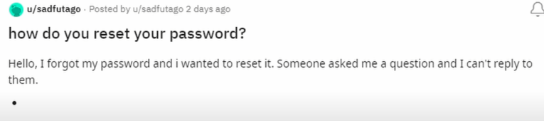
how do you reset your password u/sadfutago
Hello, I forgot my password and i wanted to reset it. Someone asked me a question and I can't reply to them.
Also on this day, lot's of images of the game case and disc are uploaded onto Imgur. Most are taken from the same angle...
He then uploads this.
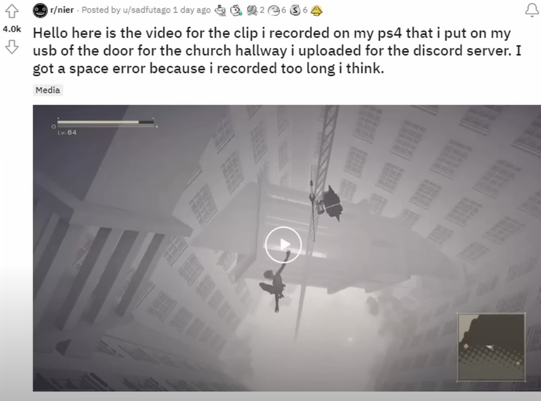
Hello here is the video for the clip i recorded on my ps4 that i put on my usb of the door for the church hallway i uploaded for the discord server. I got a space error because i recorded too long i think. u/sadfutago
This video blew everyone away.
If a mod; it would demonstrate huge modding breakthroughs...
If a secret; it's so well-hidden that only sadfutago has been able to unlock it...
Or maybe this is a marketting campaign?
sadfutago really did just post this and refuse to elaborate...
The new jokes really go mad.
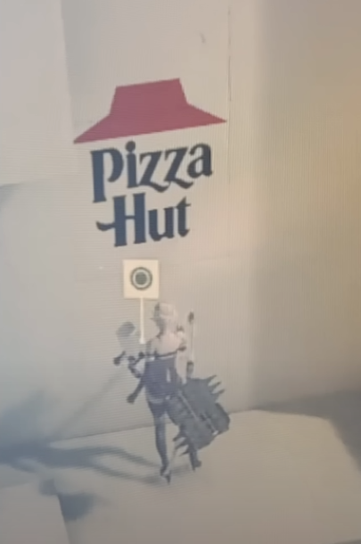
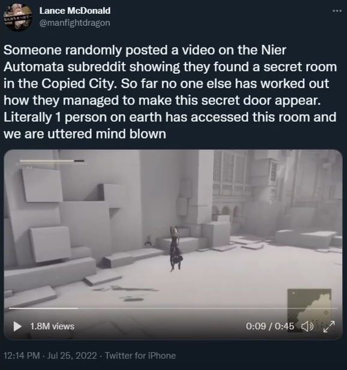
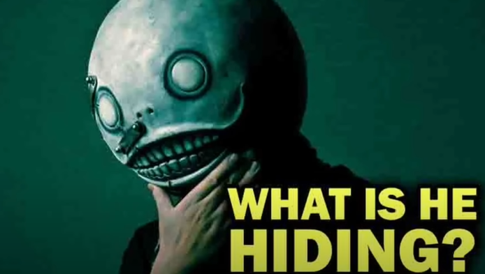
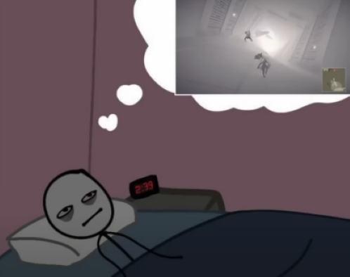
Another video is posted!
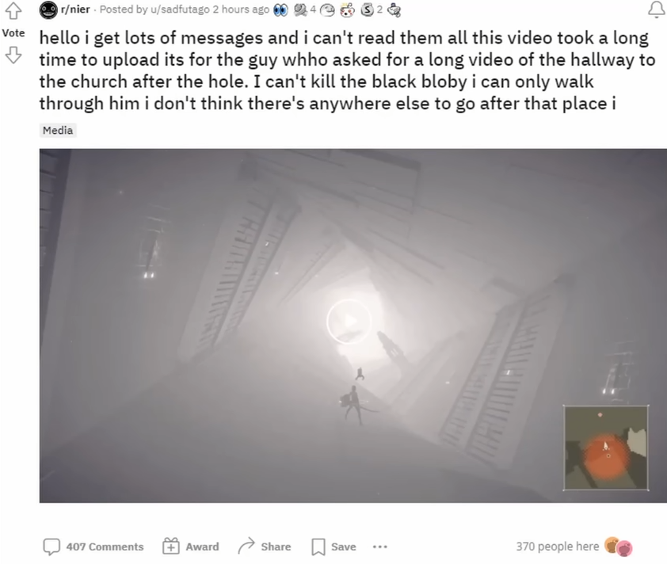
hello i get lots of messages and i can't read them all this video took a long time to upload its for the guy whho asked for a long video of the hallway to the church after the hole. I can't kill the black bloby i can only walk through him i don't think there's anywhere else to go after that place i u/sadfutago
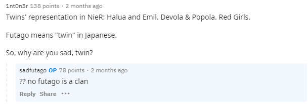
1nt0n3r
Twins' representation in NieR: Halua and Emil. Devola and Popola. Red Girls.
Futago means "twin" in Japanese.
So, why are you sad, twin?sadfutago
?? no futago is a clan
It is a common clan name stupid redditor.
Another video where the black blob becomes hostile is shown.
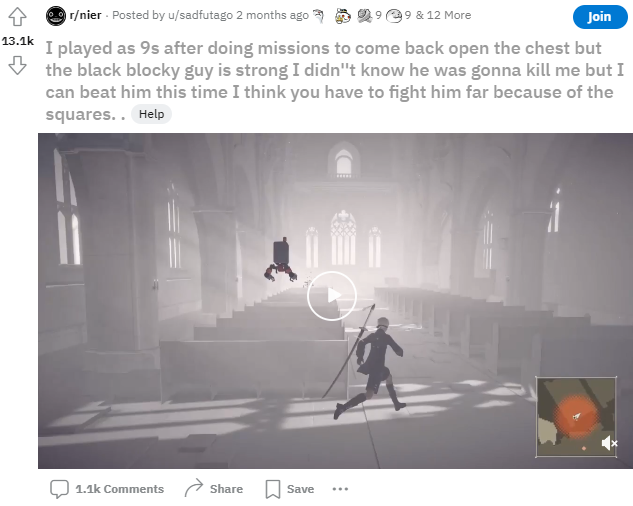
I played as 9s after doing missions to come back open the chest but the black blocky guy is strong I didn''t know he was gonna kill me but I can beat him this time I think you have to fight him far because of the squares. Help u/sadfutago
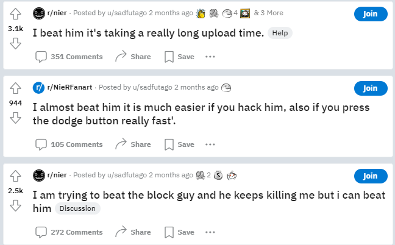
He's gotta defeat the boss!
I beat him it's taking a really long upload time u/sadfutago
I almost beat him it is much easier if you hack him, also if you press the dodge button really fast'. u/sadfutago
I am trying to beat the block guy and he keeps killing me but i can beat him u/sadfutago
This video is then uploaded
I think my game has a glitch since I keep going back the beginning I don't know how to fix it and the cup has random letters or korean. Maybe I need to restart ' the game or retry the boss again or maybe I took too long to beat him. u/sadfutago
A super long video, with some in-game dialogue questions written in Japanese, straight from another game in the Nier series.
本当の声は誰に間う > Who do we ask about our real voice? (this seems to be misspelled in game 間≠問)
本当の姿を誰に見せる > Who will we show our real self?
我が問いに答えよ > I ask you this question...
我が問う > I ask...
人が何故、世界から居なくなったのか > Why is it that people are disappeared form the world?
我が答える、命短きゆえに > (I answer) Because life is short.
我が答える。黒き病がゆえに > (I answer) Because of a black disease
我が答える。その身と魂を別つべし > (I answer) By separating body from soul
我が答える。写し身となる傀儡に収めん > (I answer) They are placed in their corresponding shells
sadfutago then seems to post a lot of screenshots, where he is out of bounds in the game.
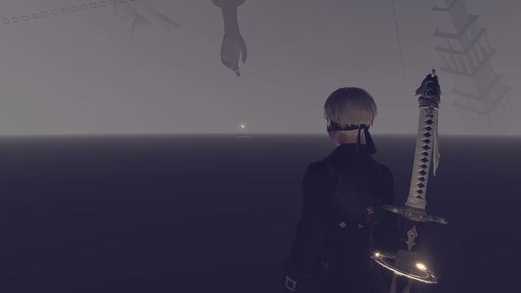
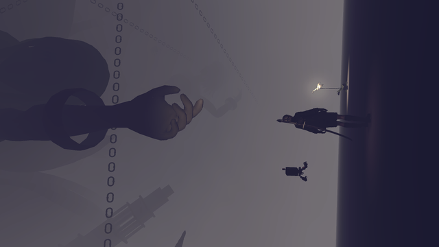
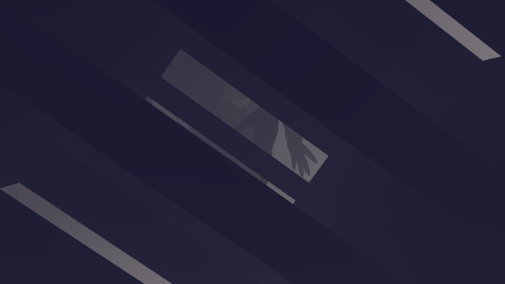
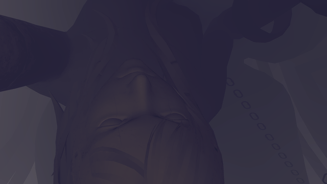
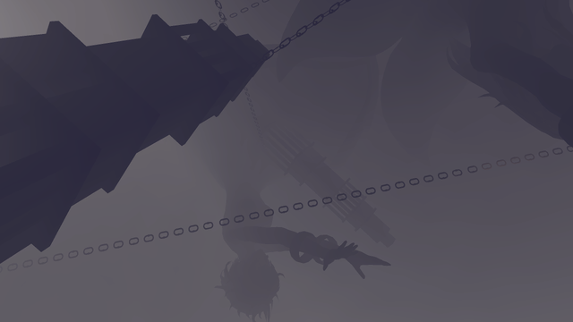
The End Of Nier...
He then posts:
www.twitch.tv/ze34_zinnia > 三時間 u/sadfutago
三時間 > 3 hours
Damn subfutago learned Korean real fast...
It seems the end is near...
(Saved from a Twitch stream)
Thank you u/sadfutago
It was revealed in this stream... to all a mod.